S3C44B0X
開發板
雖然司徒在學生時期就已經接觸過S3C44B0X晶片，不過，最近突然又想來玩玩這顆經典的ARM7晶片，而司徒這次想來點不一樣的嘗試，那就是使用8051當作RAM以及FLASH元件的模擬，這樣不僅可以省去JTAG的操作，也可以更加熟悉相關晶片的操作，畢竟司徒的重點是了解S3C44B0X晶片的運作，而非是要將重點放在系統製作上，不過，司徒少算了幾根8051 GPIO，加上目前手上也沒有多餘的小板子，因此，位址線只有18條(A0~A17)，而資料線則只有8條(D0~D7)，由於8051屬於比較慢的單晶片，因此，S3C44B0X的EXTCLK也是由8051提供，由8051主導速度，雖然司徒不確定這樣的電路是否可以運作，不過，可以確定的是，一定可以發覺S3C44B0X不為人知的一面，由於8051的FLASH以及RAM不足，因此，司徒外掛一顆W25Q128充當RAM以及FLASH的儲存地方，電路圖整理如下。
電路圖
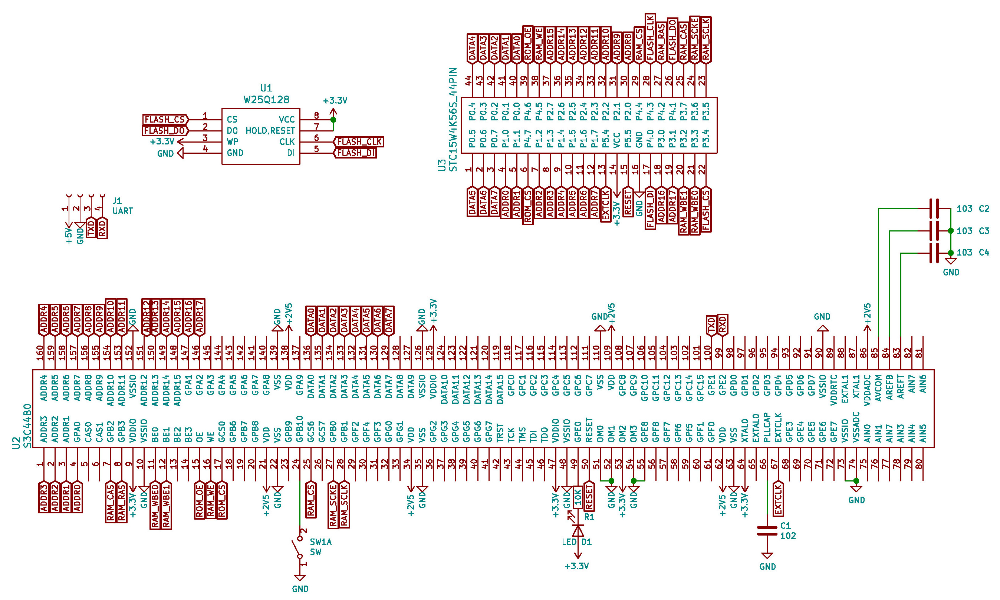
材料
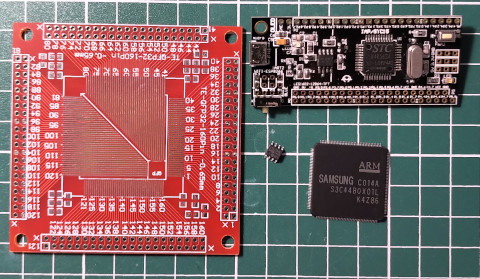
焊接
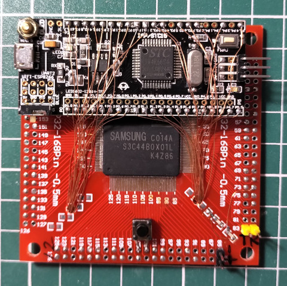
背面
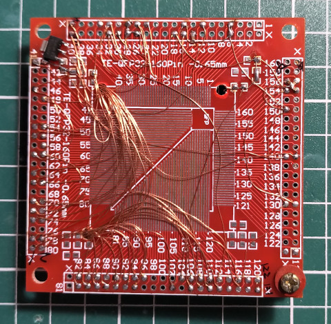
大小
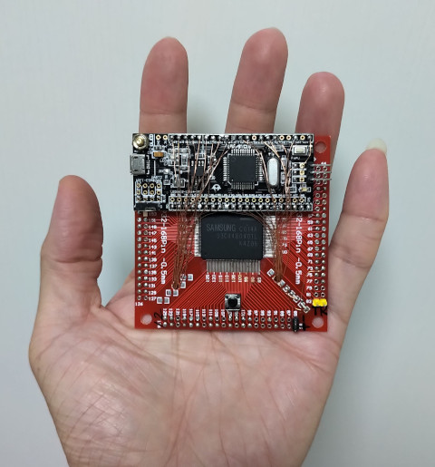
OpenSCAD(底面)
$fn = 50;
difference(){
cube([80, 80, 8]);
translate([2, 2, 2]){
cube([76, 76, 8]);
}
}
translate([1, 1, 0]){
difference(){
cube([10, 10, 5]);
translate([5, 5, 0]){
cylinder(10, r1=1, r2=1);
}
}
}
translate([68, 68, 0]){
difference(){
cube([10, 10, 5]);
translate([5, 5, 0]){
cylinder(10, r1=1, r2=1);
}
}
}
預覽圖
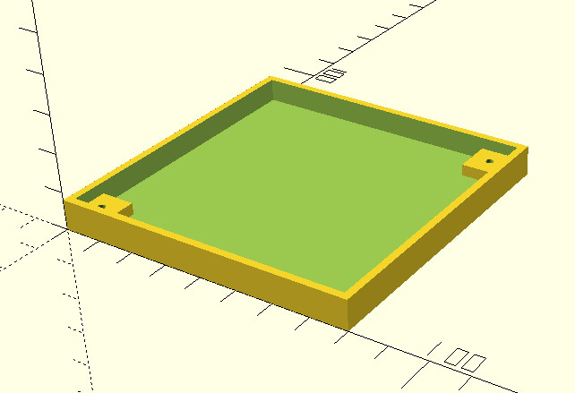
3D列印
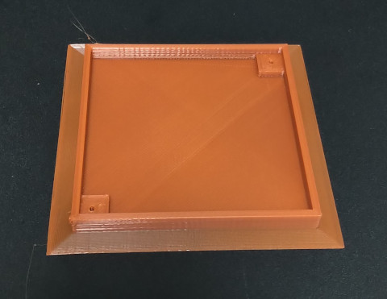
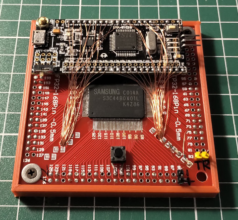
OpenSCAD(外蓋保護殼)
difference(){
cube([83, 83, 15]);
translate([1, 1, 1]){
cube([81, 81, 15]);
}
}
預覽圖
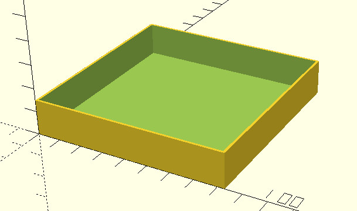
3D列印
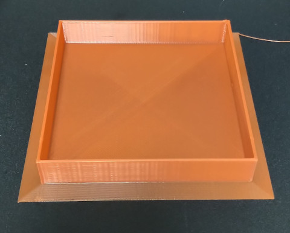
完美的保護外殼
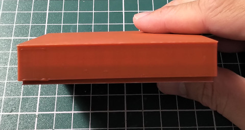